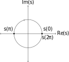
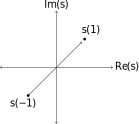
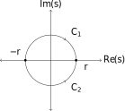
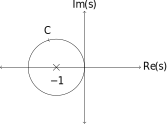
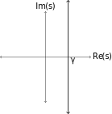
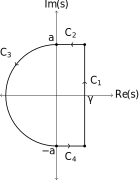

Lecture 8
Complex Analysis III
2025-08-11
In today’s lecture we finish up our introduction to complex analysis by defining contour integration in the complex plane. This will be used later in the course for inverse transforms.
Contour Integration
Recall from lecture 6 the definition of a parametric curve in the complex plane:
\[C: s(p) = x(p) +jy(p) \text{ for } p\in\mathbb{R}, a \leq p \leq b\]
The integral of a complex function \(f(s)\) along a curve \(C\) is the complex number
\[\int_{C} f(s) ds = \int\limits_{a}^{b} f(s(p)) s^\prime(p) dp\]
where \(s^\prime(p) = \frac{ds}{dp}\).
Example 8.1: Let \(f(s) = \frac{1}{s}\) and \(C\) be the unit circle
\[s(p) = e^{jp} = \cos(p) + j\sin(p) \text{ for } 0 \leq p \leq 2\pi\]

Then
\[f\left(s(p)\right) = \frac{1}{s(p)} = \frac{1}{e^{jp}} = e^{-jp}\] and \[s^\prime(p) = je^{jp}\]
Using the contour integration formula
\[\int_C \frac{1}{s} ds = \int\limits_0^{2\pi} e^{-jp} j e^{jp} dp = j \int\limits_0^{2\pi} dp = 2\pi j\]
Example 8.2: Let \(f(s) = s^2\) and \(C\) the line from \(-1-j\) to \(1 + j\).
\[s(p) - p + jp \text{ for } -1 \leq p \leq 1\]

\[f\left(s(p)\right) = [s(p)]^2 = (p + jp)(p + jp) = p^2 + 2jp^2 -p^2 = j2p^2\] and \[s^\prime(p) = 1 + j\]
Using the contour integration formula
\[\int_C s^2 ds = \int\limits_{-1}^{1} j2p^2(1_j) dp = 2j(1+j) \int\limits_{-1}^{1} p^2 dp = \frac{4}{3} (j-1)\]
In general the integral between points \(s_0\) and \(s_1\) depends on the path taken.
Example 8.3: Let \(s_0 = -r + 0j\) and \(s_1 = r + 0j\), for \(r > 0\) fixed. Consider two curves connecting the two points:
\(C_1 =\) clockwise arc from \(s_0\) to \(s_1\) of radius \(r\) \[s(p) = re^{j(\pi - p)} \text{ for } 0 \leq p \leq \pi\] \[s^\prime(p) = -jre^{j(\pi - p)}\]
\(C_2 =\) counter-clockwise arc from \(s_0\) to \(s_1\) of radius \(r\) \[s(p) = re^{j(\pi + p)} \text{ for } 0 \leq p \leq \pi\] \[s^\prime(p) = jre^{j(\pi + p)}\]
and the function \(f(s) = \frac{1}{s}\).

Using the contour integration formula for both contours
\[\int_{C_1} \frac{1}{s} ds = \int\limits_{0}^{\pi} - \frac{1}{re^{j(\pi - p)}} jre^{j(\pi - p)} dp = -j \int\limits_{0}^{\pi} dp = -j(\pi - 0) = - j\pi\]
\[\int_{C_2} \frac{1}{s} ds = \int\limits_{0}^{\pi} \frac{1}{re^{j(\pi + p)}} jre^{j(\pi + p)} dp = j \int\limits_{0}^{\pi} dp = j(\pi - 0) = j\pi\]
Note that the two integrals are different, but that \(\int_{C_2} - \int_{C_1} = 2\pi j\), the same as for the circular contour. This make sense because the contour along \(C_2\) and then backwards along \(C_1\) is the same as a counter-clockwise the circle.
Example 8.4: Let \(f(s) = s^2\) and the two contours from the previous example.
Using the contour integration formula for both contours
\[\int_{C_1} s^2 ds = \int\limits_{0}^{\pi} - r^2e^{j2(\pi - p)} jre^{j(\pi - p)} dp = -jr^3 \int\limits_{0}^{\pi} e^{j3(\pi - p)} dp = -jr^3 \left. \frac{-1}{3j} e^{j3(\pi - p)} \right|_{0}^{\pi} = \frac{1}{3} r^3 ( e^{j3(\pi - \pi)} - e^{j3(\pi - 0)} = \frac{2}{3} r^3\]
\[\int_{C_2} s^2 ds = \int\limits_{0}^{\pi} r^2e^{j2(\pi + p)} jre^{j(\pi + p)} dp = jr^3 \int\limits_{0}^{\pi} e^{j3(\pi + p)} dp = jr^3 \left. \frac{1}{3j} e^{j3(\pi + p)} \right|_{0}^{\pi} = \frac{1}{3} r^3 ( e^{j3(\pi + \pi)} - e^{j3(\pi + 0)} = \frac{2}{3} r^3\]
In contrast to the previous example the two integrals are the same, and that \(\int_{C_2} - \int_{C_1} = 0\). The difference between the two examples is that while the two contours were the same the first example had a singularity while the second was analytic everywhere. This insight is formalized in the following.
Fundamental Theorem of Complex Analysis
Let \(f(s) = F^\prime(s)\) over some region of \(\mathbb{C}\) where \(f\) is analytic. Given a curve \(C\) from \(s_0\) to \(s_1\)
\[\int_C f(s) ds = \left. F(s) \right|_{s_0}^{s_1} = F(s_1) - F(s_0)\]
For a closed, simple curve \(C\) (\(s_0 = s_1\)) where \(f\) is analytic on and inside \(C\), then
\[\oint_C f(s) ds = F(s_0) - F(s_1) = 0\]
This is Cauchy’s integral theorem.
Now consider a curve \(C\) and function \(f(s)\) analytic on and inside \(C\) and a function
\[g(s) = \frac{f(s)}{s-s_0}\] where \(s_0\in\mathbb{C}\) is a singularity and \(C\) encloses \(s_0\), then
\[\oint_C g(s) ds = \oint_C \frac{f(s)}{s-s_0} ds = 2\pi j f(s_0)\]
The term \(f(s_0)\) is called the residue, the value of the analytic function \(f(s)\) at the singularity of \(g(s)\). This is called the Residue Theorem, or the long-winded Fundamental Theorem of Complex nalysis.
For the functions we will be interested in integrating (rational functions) this machinery is all we need, since integration is a linear operator, and \(f(s)\) will take on two forms: \(s^n\) or \(e^{st}\), both of which are analytic everywhere.
Example 8.5: Lets start with a simple example, \(f(s) = 1\) and \(g(s) = \frac{f(s)}{s+1} = \frac{1}{s+1}\), which has a singularity at \(s_0 = -1\). We showed in example 8.1 that
\[\oint_C \frac{1}{s} ds = 2\pi j\] The residue theorem tells us
\[\oint_C \frac{1}{s+1} ds = 2\pi j f(-1) = 2\pi j\]
Lets verify that using the contour integral. Let \(C\) be the circle of radius one, centered at -1, the location of the singularity.

We will use figures like the above frequently so it is worth taking some time to describe them fully. It is a plot of the singularity points (poles) as crosses on the complex plane, as well as the contour with its direction indicated by the arrow. In some cases we might also plot the roots of the numerator polynomial (called the zeros) as small unfilled circles.
The contour can be described by
\[s(p) = (\cos(p) - 1) + j\sin(p) \text{ for } 0 \leq p \leq 2\pi\] and \[s^\prime(p) = -\sin(p) + j\cos(p)\]
Substituting we get
\[g(s(p)) = \frac{1}{s(p) + 1} = \frac{1}{\cos(p) + j\sin(p)}\]
The contour integral is then
\[\int\limits_{0}^{2\pi} \frac{-\sin(p) + j\cos(p)}{\cos(p) + j\sin(p)} dp = \int\limits_{0}^{2\pi} \frac{je^{jp}}{e^{jp}} dp = j \int\limits_{0}^{2\pi} dp = 2\pi j\]
Why did we use a circle for the contour? Because it makes the integral easier. As long as the contour is closed and encompases the singularity you will get the same answer. However the steps to evaluate the integral will likely be more tedious.
Also notice the residue theorem saves us a good deal of work, as we do not have to specify the contour and perform the contour integral.
Example 8.6: Here is an example where \(f(s)\) is more complicated but still analytic inside the contour. These contour integrals are much harder to do by hand but the residue theorem makes them rather easy. Let \(f(s) = s^n\) for \(n\in\mathbb{Z}^+\) (a positive integer) and let \(g(s) = \frac{s^n}{s+1}\).
For now, we will assume without proof that \(f(s) = s^n\) is analytic and let \(C\) be the unit circle centered at the pole (-1,0), as in the previous example. Then by the residue theorem
\[\oint_C \frac{f(s)}{s+1} ds = \oint_C \frac{s^n}{s+1} ds = 2\pi j f(-1) = 2\pi j (-1)^n\]
Similarly if \(f(s) = e^{st}\) with the same \(g\) and contour, then
\[\oint_C \frac{f(s)}{s+1} ds = \oint_C \frac{e^{st}}{s+1} ds = 2\pi j f(-1) = 2\pi j e^{-t}\]
Multiple Residues
What if there are more than one singularity? Let
\[g(s) = \frac{f(s)}{(s-s_1)(s-s_2)\cdots (s-s_N)}\] where \(f(s)\) is analytic on and inside a closed contour \(C\) enclosing all the \(N\) singularities. Then
\[\oint_C g(s) ds = \oint_C \frac{f(s)}{(s-s_1)(s-s_2)\cdots (s-s_N)} ds = 2\pi j \sum\limits_{n = 1}^{N} K_n\] where \(K_n\) is the n-th residue \[K_n = \left. (s-s_n)g(s) \right|_{s = s_n}\]
Example 8.7: Let \(f(s) = se^{st}\) be assumed analytic and
\[g(s) = \frac{f(s)}{s^2 + 3s + 2} = \frac{f(s)}{(s+1)(s+2)}\] Let \(C\) be a circle of radius three centered at the origin, which encloses the singularities at (-1,0) and (-2.0). Then
\[\oint_C g(s) ds = 2\pi j [K_1 + K_2]\] where
\[K_1 = \left. (s+1)g(s) \right|_{s = -1} = \left. \frac{f(s)}{s+2} \right|_{s = -1} = \left. \frac{se^{st}}{s+2} \right|_{s = -1} = -e^{-t}\]
\[K_2 = \left. (s+2)g(s) \right|_{s = -2} = \left. \frac{f(s)}{s+1} \right|_{s = -2} = \left. \frac{se^{st}}{s+1} \right|_{s = -2} = 2e^{-2t}\]
So the final result is
\[\oint_C \frac{se^{st}}{s^2 + 3s + 2} ds = 2\pi j \left[-e^{-t} + 2e^{-2t} \right]\]
Use in Inverse Transforms
We will be interested in two specific complex integrals:
Inverse Laplace Transform: for \(s\in\mathbb{C}\) and real \(t > 0\) \[x(t) = \frac{1}{2\pi j} \int\limits_{\gamma -j\infty}^{\gamma + j\infty} X(s) e^{st} ds\]
Inverse Z Transform: for \(z\in\mathbb{C}\) and integer \(n > 0\) \[x[n] = \frac{1}{2\pi j} \oint X(z) z^{n-1} dz\]
where \(X(s)\) and \(X(z)\) will be rational complex functions. \[X(s) = \frac{P(s)}{Q(s)}\]
\[X(z) = \frac{P(z)}{Q(z)}\]
So as long as \(P(z) z^{n-1}\) and \(P(s) e^{st}\) are analytic then the residue theorem can be used to evaluate the transforms.
Bromwitch contour
Notice the contour for the inverse Laplace transform is not written as as closed integral but with limits that include imaginary values at infinity.
\[\int\limits_{\gamma -j\infty}^{\gamma + j\infty} X(s) e^{st} ds\]
where \(\gamma\) is larger than the largest singularity of \(X(s)\). This can be visualized as the linear contour
\[s(p) = \gamma + jp \text{ for } p\in\mathbb{R}\]

Recall however that there is only one point at infinity for complex numbers. To convert this to a closed integral so we can apply the residue theorem we need to define the Bromwitch contour.

This closed piecewise contour consists of four sub-contours. To make this contour be the closed equivalent of the one above we let the value of \(a\), where the contour crosses the imaginary axis approach infinity. The integral that corresponds to the inverse Laplace transform then becomes
\[\int\limits_{\gamma -j\infty}^{\gamma + j\infty} X(s) e^{st} ds = \lim_{a \rightarrow \infty} \int_{C_1} X(s) e^{st} ds + \int_{C_2} X(s) e^{st} ds + \int_{C_3} X(s) e^{st} ds + \int_{C_4} X(s) e^{st} ds = \oint_C X(s) e^{st} ds\]
I think of this as the contour goes off to infinity, and comes back in from the other side, but this is just a mental convenience.
We will see several examples of this contour over the next week.